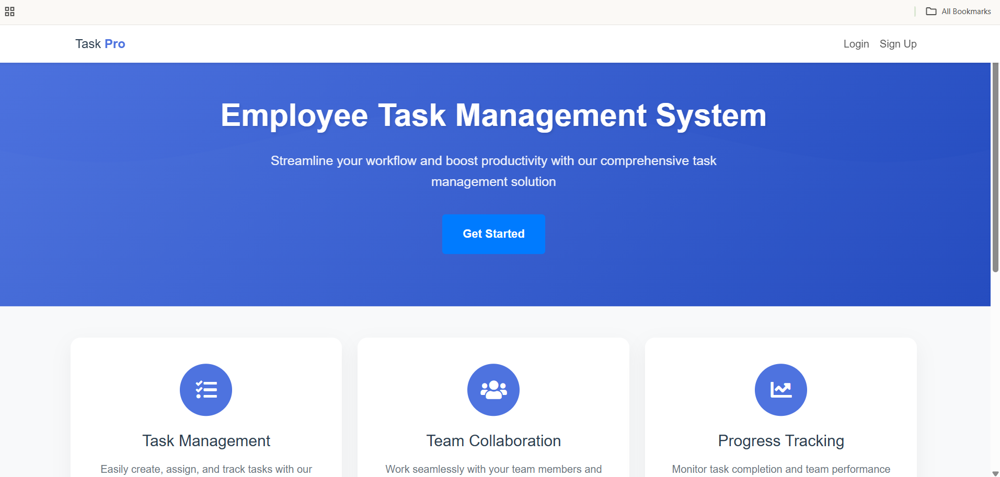

Personal Website
Completed: 2024
A responsive personal portfolio website showcasing my skills and projects.
Technologies Used: HTML, CSS, JavaScript
Database for Guitar Management
Completed: 2024
MySQL-based database system for managing guitar inventory and customer records.
Technologies Used: MySQL, Microsoft Access
Task Management Software
Completed: 2025
Web-based application with form validation and task operations using JavaScript and PHP.
Technologies Used: JavaScript, PHP, HTML, CSS
